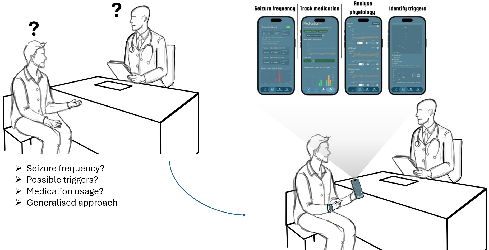
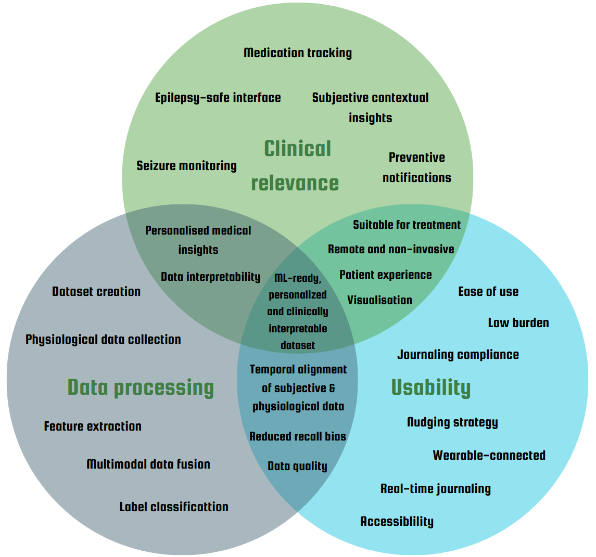
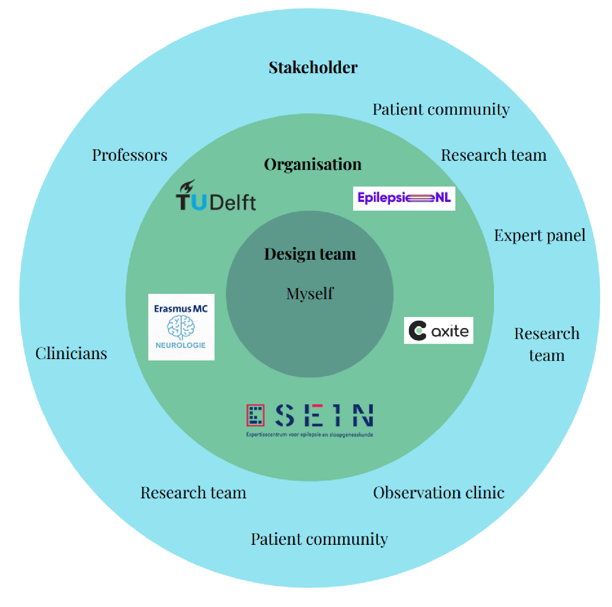
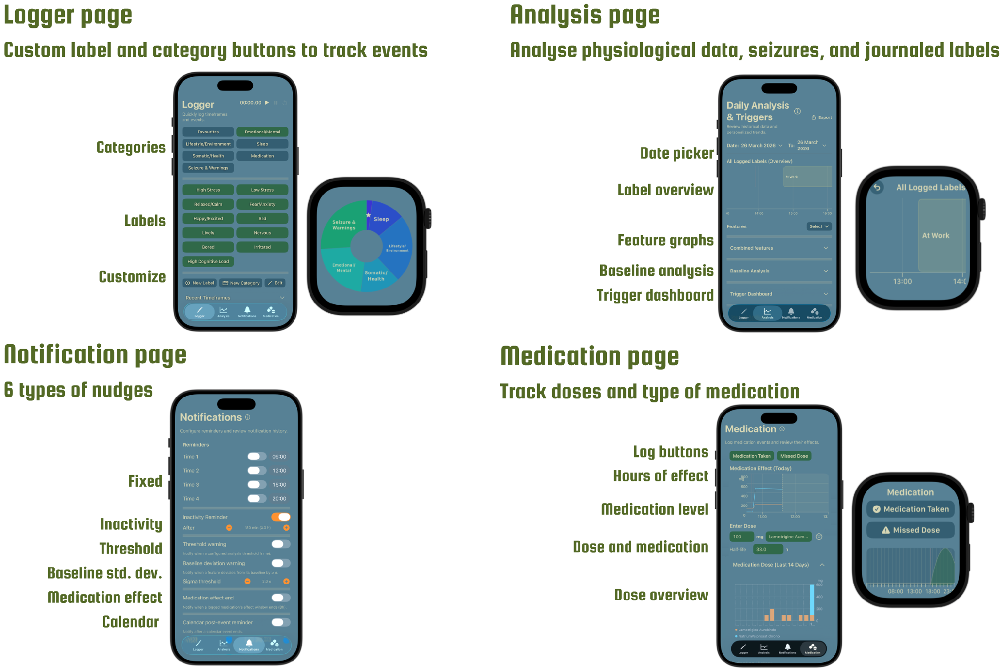
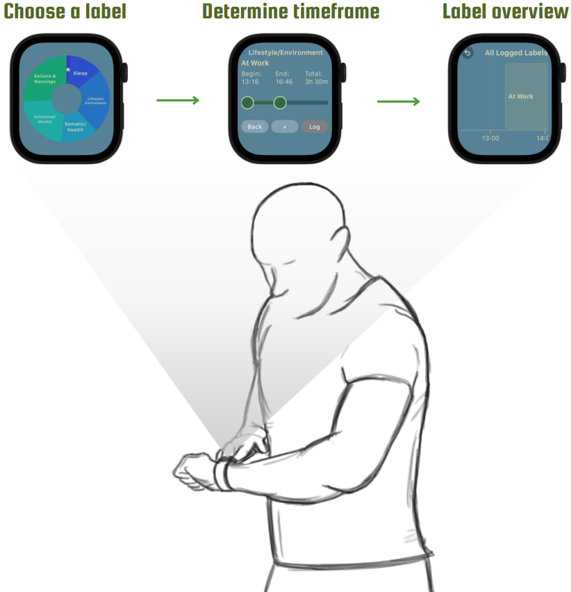
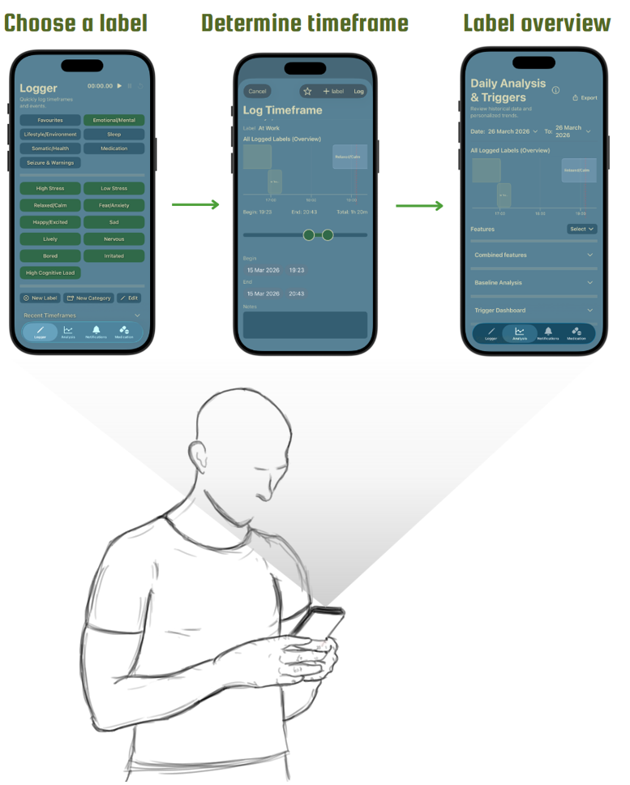
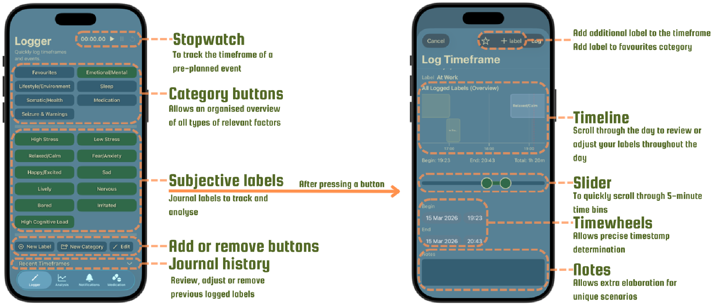
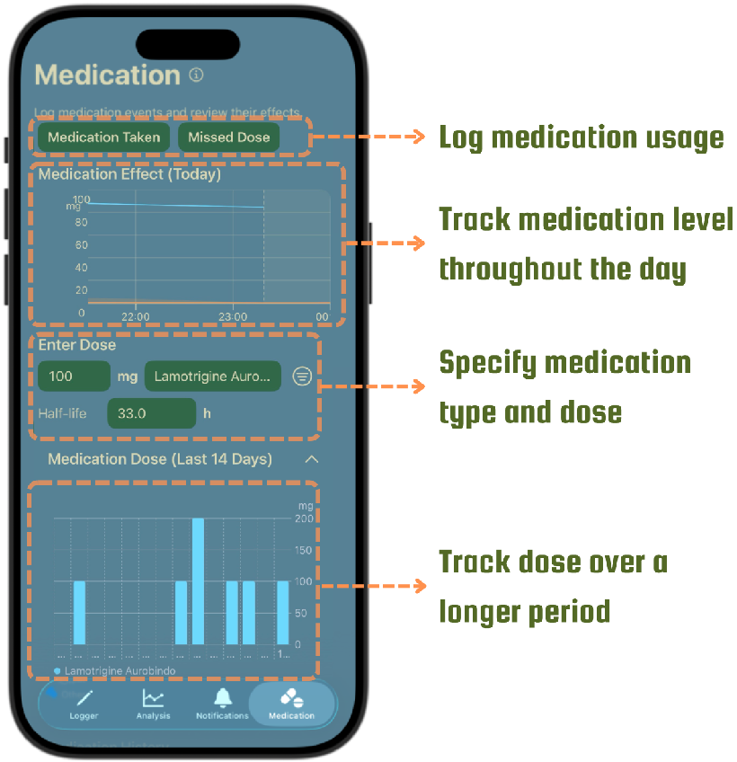
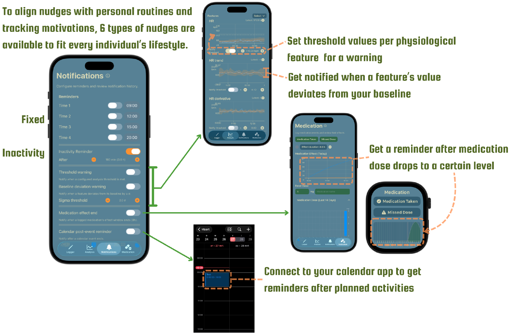
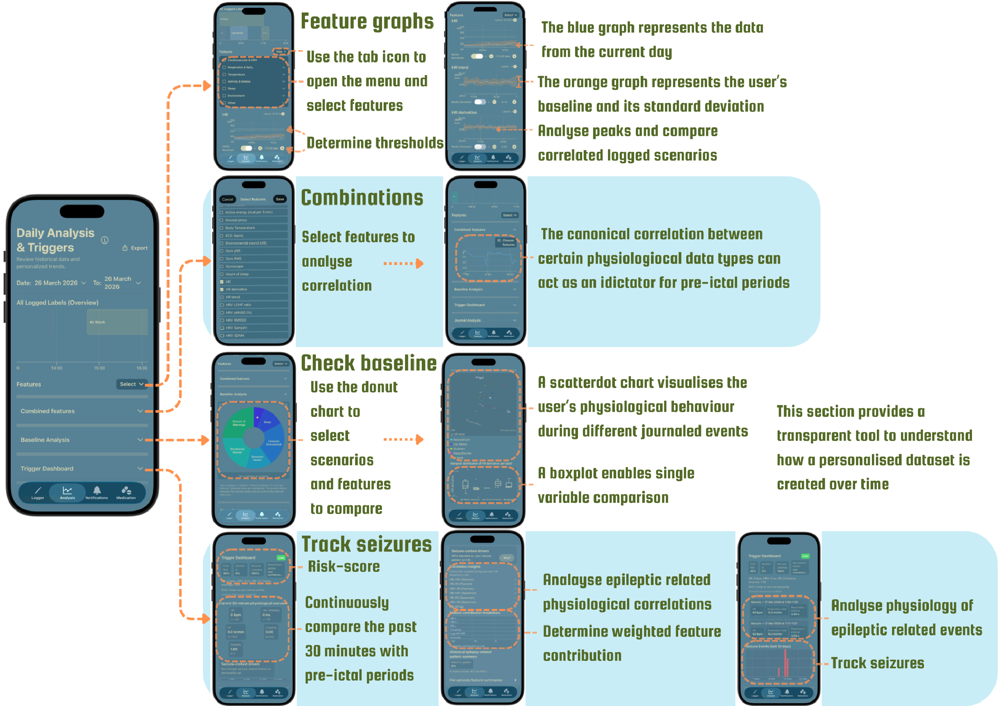

01 / Digital health
The Epilepsy Journal
A wearable-connected iPhone and Apple Watch app that brings daily experiences, medication and physiological data together in one personal epilepsy journal.
The challenge
Seizures are unpredictable, while the factors that may influence them differ from person to person. A wearable can record changes in the body, but those measurements cannot explain on their own what someone was doing, feeling or experiencing. A diary can add that context, but entries made afterwards are easy to forget and difficult to align accurately with sensor data.

The project set out to make those two perspectives useful together: a low-effort way to record personal events and medication alongside wearable measurements, with a clear timeline that patients and clinicians can review. The resulting dataset is intended to support more personalised research and conversations about care; it does not diagnose seizures or provide medical advice.

Designing with the people involved
Stakeholder collaboration
I began from my own experience as someone living with epilepsy, then involved patients, clinicians and researchers throughout the project. I arranged conversations when a design question needed clinical, technical or lived-experience input, and gave participants a consent form before stakeholder meetings.
Patients and the patient organisation EpilepsieNL helped surface the importance of personal goals, understandable language, flexible labels and control over sensitive data. Conversations with clinicians and SEIN researchers shaped the need to relate seizure events to medication and physiological changes, while keeping analysis focused and clinically relevant. A TU Delft computer-science expert and the Axite workshop added perspectives on interpretable machine learning, engagement and remote research. I translated this feedback into the final app’s customisable logging, layered analysis and user-controlled data export. A clinical stakeholder review confirmed the concept’s potential value while reinforcing that its outputs must not be presented as medical recommendations.

One connected journal
The final design brings four daily tasks into a single system: recording events, reviewing physiological patterns, configuring reminders and tracking medication. The logger opens first so a user can record an event quickly; the other areas are available when they want to review their data or adjust the app to suit their routine.
The interface groups labels into categories and avoids flashing or abrupt high-contrast effects. Its aim is to keep the journal straightforward to use and the collected information understandable, including for people who may not be familiar with data analysis.

Quick, flexible journaling
Users select a label from grouped categories such as sleep, emotional state, environment, health, medication or seizure-related events. They can add their own labels and categories, save favourites, and record overlapping events. A note can add personal context to a label.
Three logging modes suit different moments: a snapshot records something happening now, a stopwatch follows a planned event from start to finish, and manual time selection lets users enter an event afterwards. Each entry has an editable start and end time and appears on a scrollable daily timeline, where it can later be reviewed, changed or removed. This reduces reliance on memory and keeps the timestamp connected to the corresponding wearable data.



Support shaped around the user
The medication area records a medicine, dose and user-entered half-life, and lets someone log a taken or missed dose. The app visualises the expected medication level over time so it can be considered alongside events and physiological changes. It is a tracking aid, not a dosing recommendation.
Reminders can be configured to fit an individual routine. The final concept combines scheduled prompts, inactivity reminders, calendar-linked prompts, physiological threshold or baseline-deviation warnings, and reminders when a logged medication effect is expected to end. Users can choose which kinds to enable. This gives people more control over when the app interrupts them.


From measurements to patterns
On the analysis page, users choose a date range and physiological features to review. The app places journal entries and seizure events on a timeline, then shows selected measurements as graphs. A personal baseline and shaded standard-deviation range help distinguish someone’s usual values from changes that may deserve attention.
Users can compare logged scenarios with selected features and inspect correlations between pairs of measures. Medication history and event timing add context to those views. Data is stored on the phone, and the user can export a selected period of synchronised journal and wearable data as a structured CSV or Excel file to share or use in research.
The trigger dashboard is a research prototype that illustrates how recent measurements might be compared with a person’s previously logged events. Its risk indicator is not validated, is not a clinical prediction, and must not be used to guide treatment.

A foundation for longer-term research
The project delivered a functional iPhone and Apple Watch prototype, built in Swift with HealthKit integration. It aligns time-stamped journal entries with available wearable data in a format that can be segmented into 30-second windows for future analysis. The prototype currently depends on compatible Apple devices, and it does not collect every potentially relevant biomarker, including electrodermal activity.
The data pipeline was checked structurally, but it has not been validated against real seizure events. The app and its analysis features therefore remain a research prototype rather than an approved clinical product. A longer study with people living with epilepsy is needed to establish which labels and measurements are useful over time and whether the resulting personal datasets can support reliable clinical research.
Project text and final-design visuals are based on my TU Delft graduation project, 2026.
Next projectInfant Growth Monitor